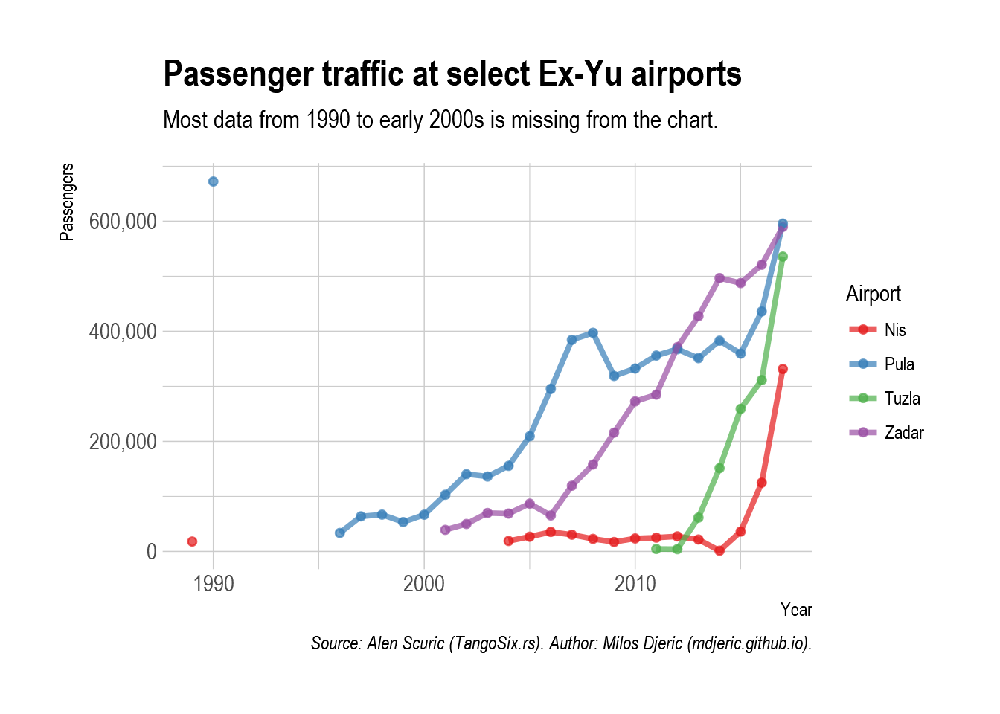
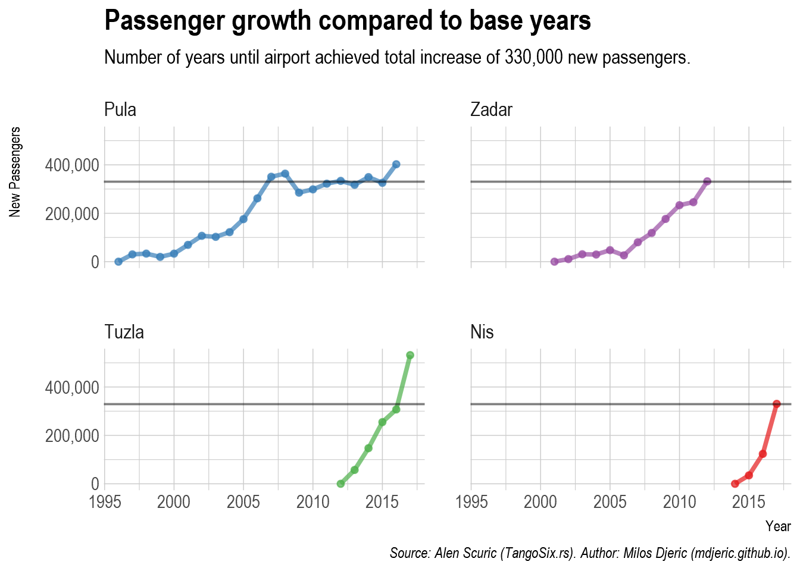
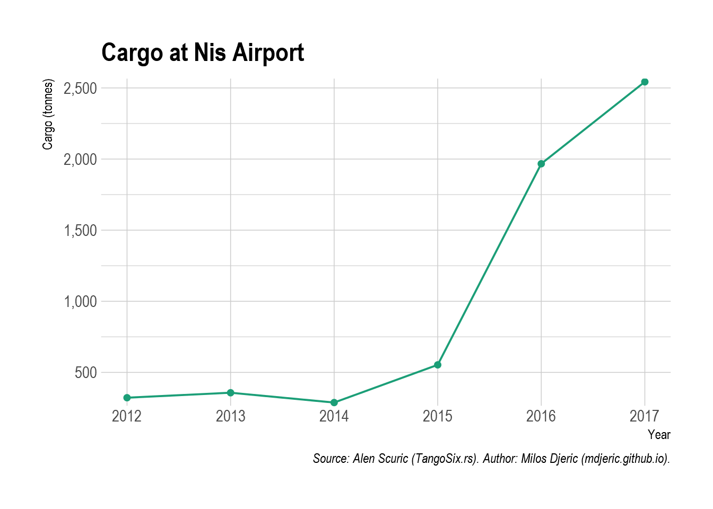
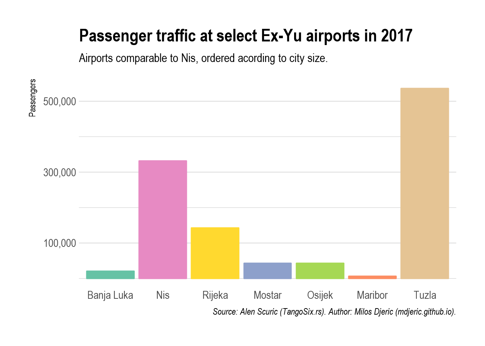
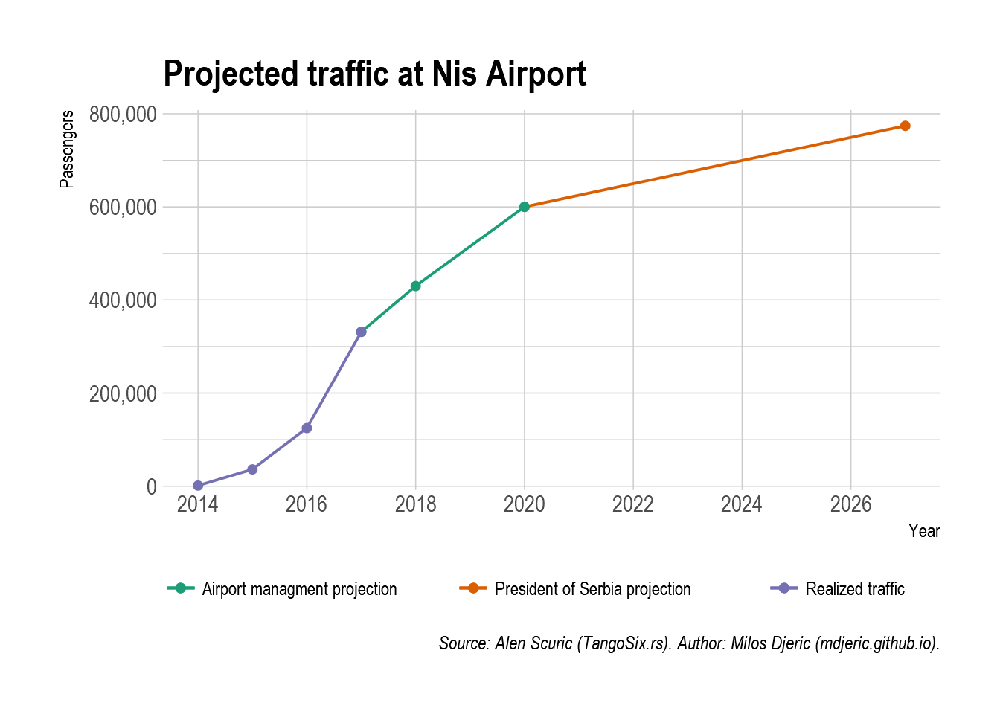
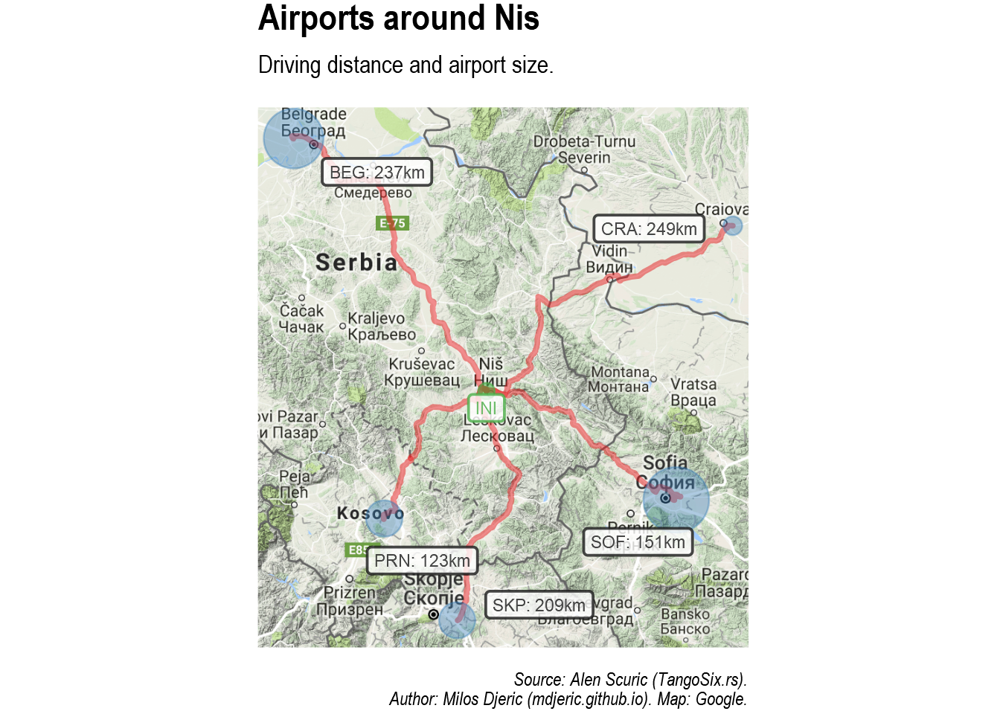

Tables are improved visualisations from the analytic article “Who and why has a problem with airport in Nis”, by Alen Scuric (in Serbo-Croatian, Kome to i zasto smeta aerodrom u Nisu?).


Using HTML widgets and plotly.
Following packages were used to create plots: tidyverse, plotly, hrbrthemes, scales, ggmap, googleway, ggrepel, RColorBrewer.